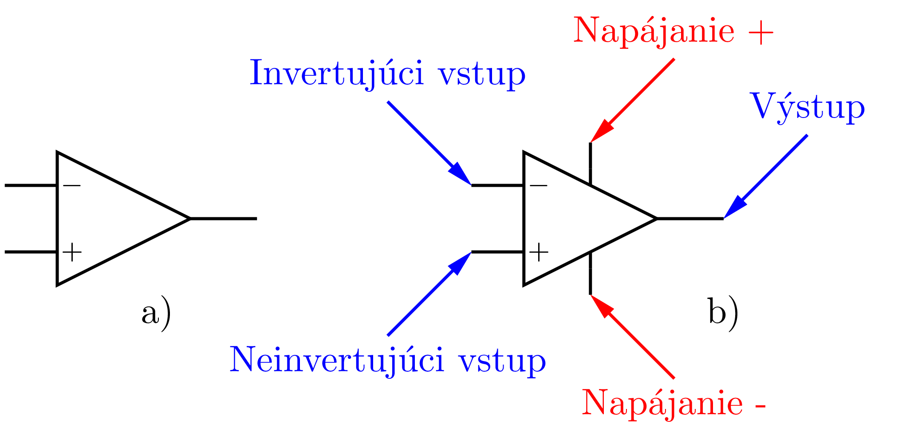

Operačný zosilovač #
Operačný zosilovač je univerzálne elektronické zariadenie, v súčasnej dobe v podobe integrovaného obvodu, ktoré je určené na elektronickú realizáciu matematických operácií (preto názov operačný) ako je sčítanie, odčítanie, integráciu, deriváciu, logaritmovanie, zosilnenie. V minulosti bola jeho hlavná oblasť použitia pri riešení diferenciálnych rovníc v analogových počítačoch, v súčasnosti sa používa aj na spracovanie a úpravu signálov zo senzorov alebo ako súčasť regulačných obvodov. Je to najuniverzálnejší obvod elektroniky, ktorý sa vyrába v množstve typov a modifikácií pre rôzne oblasti použitia.


Obr. 27 Značka operačného zosilovača, a) ideálny, b) s označenými vývodmi.#
Vlastnosti #
Ideálny operačný zosilovač má dva vstupy, invertujúci (-) a neinvertujúci (+) a jeden výstup. K operačnému zosilovaču sú pripojené ďaľšie elektronické komponenty označované ako operačná sieť, ktoré určujú vlastnosti obvodu. Vlastnosti samotného ideálneho operačného zosilovača môžeme popísať v niekoľkých bodoch:
Zosilovač na výstupe zosilňuje rozdiel medzi napätiami na vstupoch \((U_+ - U_-)\), ak je rozdiel kladný, výstup bude mať kladnú hodnotu a naopak.
Zosilnenie \(A\) operačného zosilovača je veľmi veľké, teoreticky nekonečné.
Do vstupov operačného zosilovača netečie žiaden prúd, vstupný odpor je nekonečný.
Výstup operačného zosilovača môžeme zaťažiť ľubovolne malou záťažou, jeho výstupný odpor je nulový.
Pre operačný zosilovač zapojený do obvodu zároveň platí:
Operačný zosilovač v lineárnom režime nastavuje napätie na výstupe tak, aby rozdiel napätí medzi vstupmi bol nulový.
TODO napätia a prúdy OPAMP, ideálny a reálny OPAMP, tabulka porovnaia vlastností
Sledovač #

Obr. 28 Sledovač s operačným zosilovačom#
TODO šipky, označenie napätí
Analýza obvodu
Z vlastnosti 5 a zo zapojenia obvodu vyplýva, že na výstupe operačného zosilovača a zároveň aj na invertujúcom vstupe (-) je rovnaké napätie ako na neinvertujúcom vstupe (+), teda platí
Obvod má napäťové zosilnenie \(K=1\), z vlastnosti 3 vyplýva, že vstupný odpor je teoreticky nekonečne veľký a podľa vlastnosti 4 je výstupný odpor nekonečne malý. Sledovač sa preto uplatní všade tam, kde by sme ovplyvnili vlastnosti zariadenia pripojením iných obvodov, meraním, vodičov a podobne.
Invertujúci zosilovač #

Obr. 29 Invertujúci zosilovač#
Analýza obvodu
Neinvertujúci zosilovač #

Obr. 30 Neinvertujúci zosilovač#
Analýza obvodu
Komparátor #
Typy operačných zosilovačov #
prevedenie, púzdra, zapojenie vývodov, napájanie, R-R